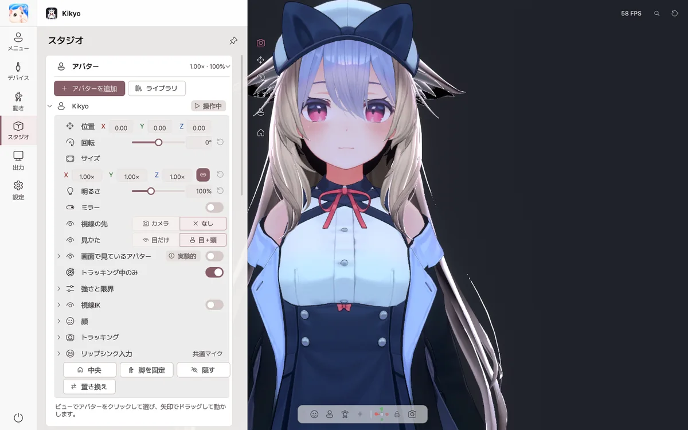
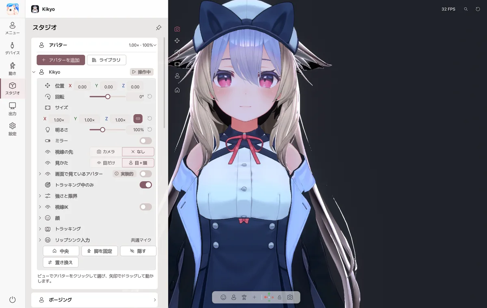
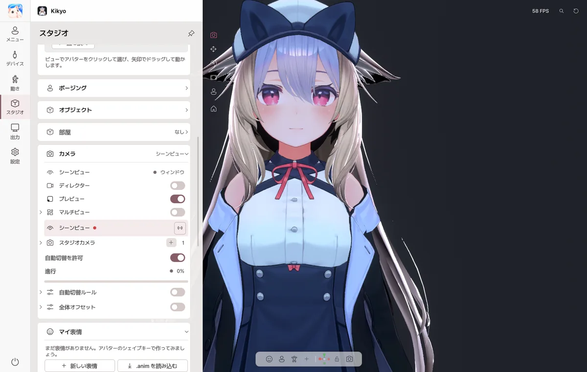
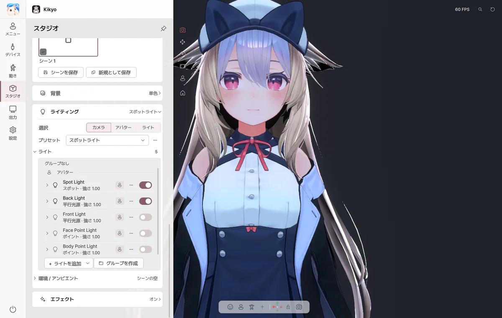

8. スタジオ：シーン・カメラ・照明・エフェクト
v2.0.0 では以前の「シーン」メニューが **「スタジオ」**になりました。背景、部屋、照明、小物、アバターの配置、カメラをまとめて保存します。スタジオ所属の項目はそのシーンだけで表示され、アバター所属の項目はアバターを別のスタジオへ移しても付いてきます。

シーンの保存と切り替え
- スタジオ → シーンで新しいシーンを作るか、保存済みのシーンを選びます。背景・部屋・アバター・小物・照明・カメラを調整します。
- 保存するとその構成が記録されます。シーン名を検索したり、サムネイルで選んだりできます。大きな修正の前には別名で保存しておくと安全です。
- 衣装と一緒に別のシーンへ持っていきたい小物・ライトはアバター所属、舞台固有の装飾や照明はスタジオ所属にします。
- 作業用シーンビューと配信用カメラは別です。配信カメラを送出したまま、アプリの画面で別の方向を向いて小物を編集できます。OBS に出る画面を必ず確認してください。
複数アバター (Pro)

- アバター追加で同じスタジオに複数のモデルを置けます。操作対象を選んでから位置・回転・大きさ・表情を変更してください。選択していないアバターに自動的に変更が反映されるわけではありません。
- 操作対象の切り替えではカメラや iPhone 等のトラッキング入力を受けるアバターを変えます。元のアバターは最後の姿勢や指定された待機動作を保ちます。
- 同じ動きを使うと体格の異なる複数モデルにも共通の関節動作を適用できます。身長が異なるため位置まで完全一致するとは限りません。
- リップシンク対象：全員／メイン／オフは、声に合わせて全員の口を動かすか、現在のメインだけか、誰にも適用しないかを選びます。
- 位置 X/Y/Zは舞台上の場所、回転は向き、スケールは見た目の身長を変えます。大きさを変えた場合はカメラとの相対的な距離感も変わるため、構図を再確認してください。
スタジオカメラ (Pro)

アプリの シーンビューは操作・編集用です。一方、スタジオカメラは配信映像の位置・向き・レンズを保存し、Spout2・NDI 等の出力先に送ります。カメラを切り替えてもアプリ本体の編集視点は奪われません。
- **スタジオ → カメラ → +**でカメラを追加します。新しいカメラは通常、編集中のアバターを追い、頭を画面に収める設定で始まります。
- カメラの行を選ぶと位置方法・向き・レンズ・遷移を設定できます。行をドラッグすると並び順が変わります。
- 今の作業画面と同じ構図にしたい場合、シーンビューを合わせてから ⋯ → 現在のビューに合わせる を使用します。モード変更だけではモードごとの以前の数値が復元され、カメラが飛んで見える場合があります。
- カメラを 送出中 に切り替え、OBS など受信アプリで実際の画面を確認します。
カメラの位置方式

| 方式 | 動作と適した使い方 |
|---|---|
| その場 | 保存された X/Y/Z 座標から動きません。アバターが離れるとフレームから出ます。固定スタジオ向けです。 |
| 対象に固定 | 対象の骨やポイントと同じ位置に直接移動します。頭を対象にすると頭の内部に入ることもあるため、一人称などに適しています。 |
| 距離を置いて追従 | 対象から指定した X/Y/Z メートル離れた場所を保ち、一緒に移動します。歩くキャラクターの全身・バストアップ撮影に向きます。 |
| 対象を周回 | 距離を置いて追従しながらリング角度の分だけ対象の周囲を回ります。正面・横・斜めのカットを作れます。 |
距離 X/Y/Zは画面のピクセルではなく対象からの相対位置（メートル）です。X を増やすと左右、Y を増やすと高さ、Z は前後の位置が変わります。符号によって前後が逆になる場合があるので小さい変化で確認してください。
位置のなめらかさ X/Y/Zは追従の遅れです。0 ならすぐ追従するため細かなトラッキングの震えも映り、数値を増やすと滑らかになりますが急な動きで後れを取ります。Y のみ上げると座る・跳ぶ時の高さ変化だけ穏やかになります。回転のなめらかさでは横回転（Yaw）・上下（Pitch）・傾き（Roll）のうち、選んだ方式が使用する軸を調整します。
「対象に固定」の回転は何をするのですか？
カメラを人物の右 1 m・後ろ 2 mに置き、人物が左へ 90°向きを変えた場合を考えます。
| 対象の回転を距離に反映する方法 | カメラ位置の変化 |
|---|---|
| ワールド空間 | 部屋を基準に距離を維持します。人物が回ってもカメラは部屋の同じ方向から撮影するため、顔が横向きになることがあります。 |
| シンプル追従 | おおむね対象の後ろを保って追います。左右オフセットを独立して厳密に保持する方法ではありません。 |
| 対象に追従、上はワールド | 人物の水平方向の回転に応じてカメラの相対位置も回りますが、画面の上は世界の上に固定されます。 |
| 回転、ロールなし | 横を向く動きや上下の視線に反応しますが、首を横に倒すロールを追いません。 |
| 対象に固定 | Yaw・Pitch・Roll の全回転をカメラの相対位置に適用します。頭を傾けるとカメラもその周りを動き、ダイナミックな視点になります。 |
ここでいう 「対象に固定」はレンズを自動的に顔へ向けるという意味ではありません。対象に合わせてカメラの置き場所を計算する座標系を回す機能です。顔を常に撮りたい場合は、別の「向き」設定で対象を直視または画面構図を選びます。
カメラの向き・狙う場所
| 方式 | 実際の撮影結果 |
|---|---|
| そのまま | 保存された回転角を固定します。人物が動けば画面外へ出る可能性があります。 |
| 対象と同じ向き | 対象が向く方向と同じ方向を向きます。対象自身を見続けるわけではありません。 |
| 対象を直視 | 指定した場所へ常にレンズを向けます。固定の位置で動く人を撮るのに適しています。 |
| 一人称 | **初期角度（横・縦）**から向きを決めます。頭の位置への固定と組み合わせて POV 撮影に使えます。 |
| 画面構図 | 対象を指定した画面位置に保ちます。X=0.5 / Y=0.5 は中央、X=0.33 は画面左約 1/3 のインタビュー構図です。 |
- 対象としてアバター全体または頭・体の骨を選べます。頭を選ぶと頷きもカメラの狙いに反映されます。
- 注視点 X/Y/Zは対象の基準点から狙う場所を何メートルずらすかを決めます。頭の中心より口元を撮りたいなら Y を少し下げます。
- 向きのなめらかさを大きくするとレンズの方向転換が遅くなり、細かい震えが減る代わりに急な動きへの反応が遅れます。
- 画面位置 X/Y（0–1）は対象の画面内の位置を変えます。アバター自体のシーン座標を動かすわけではありません。
レンズ、揺れ、切り替え

| 設定 | 小さく／大きくすると |
|---|---|
| 画角 FOV（1–179°） | 小さいほど望遠・被写体が大きく、広げるほど背景が多く入り周辺が広角に見えます。 |
| 正投影サイズ | 大きくすると遠近感のない画面でより広く映り、人物は小さくなります。 |
| ニア／ファークリップ | 近すぎる物体や遠すぎる背景を表示しない境界です。ニアを大きくしすぎると顔や眼鏡が欠けます。 |
| 縦横比 | 16:9 と 9:16 では同じ視点でも映る範囲が異なります。変更後は構図を調整します。 |
| 手持ち揺れの強さ（0–1） | 0 は三脚のように安定。大きいほど手持ちカメラ風の揺れが目立ちます。 |
| 揺れの速度（0–2） | 小さいほどゆっくり、大きいほど素早く揺れます。強さとは別の設定です。 |
| カット／クロスフェード（0–5 秒） | カットは即座に変わり、フェードは設定秒数をかけて２画面が重なりながら切り替わります。 |
| アニメーション時間（1–15 秒） | 一回のカメラ動作の長さ。ループ方法と回数で繰り返しを調整できます。 |
| ディレクターの速度（0–5） | カメラアニメーション全体の進み方を変えます。 |
| 画角補正（−30°～+30°） | 保存したカメラの元の画角を変えず、一時的にディレクター側で画角を補正します。 |
ディレクターモードはどのカメラを配信するかを制御します。マルチビューは自分の作業画面に複数のプレビューを並べる機能で、別のスイッチをオンにした場合のみ表示されます。格子サイズ 2–4は１辺のセル数、ダウンサンプリング 1–8を上げるとプレビューが軽くなる代わりに画質が粗くなり、更新頻度を下げると負荷が減る代わりに動きが滑らかでなくなります。これらは配信出力画質の設定とは別です。
自動切り替えではタグと重みにより候補カメラを選びます。重み 0 の候補は選ばれず、他より重みが高い候補は選ばれやすくなります。配信開始時アニメーションを再スタートするか継続するかも選べます。**カメラごとの Spout2（Pro）**は同時に最大 3 つの独立した送信元を OBS へ出せます。OBS との接続方法を確認してください。
部屋・小物・ボーンへの取り付け

部屋の X/Y/Z は部屋全体の位置、回転は向き、スケールは広さに影響します。小物の X/Y/Z は置く場所、回転は向き、連動を外した軸別スケールは縦だけ伸ばすなどの変更に使います（形が変形する場合があります）。ワールド固定ならその場に残り、アバターに付けると移動に追従し、ボーンに付けると手・頭のジェスチャーやポーズにも追従します。小物がモデルにめり込む場合はボーン基準の位置・回転オフセットを少しずつ調整してください。
背景
単色は直接色を変え、緑／青は OBS クロマキーに使えますが衣装の同色部分も消える恐れがあります。透明は Spout2/NDI のアルファ合成に適します。アプリの作業背景が黒く見えても受信側のアルファが正しく届いている場合があります。背景画像はズームで拡大縮小、X/Y で位置、カバー／クロップで比率を保って画面を埋めるかを選びます。
照明
- 明るさを上げると照らす面が明るくなり、上げすぎると肌の白い部分が飛びます。**色温度（約 1500–12000 K）**は小さいとオレンジ寄り、大きいと青寄りです。
- 方向ライトは太陽光風、ポイントライトは周囲へ、スポットライトは円錐状に照らします。範囲を上げると遠くまで届き、角度を広げると照射範囲が増えます。
- 位置追従はライトを人物と一緒に移動させ、対象を見るはライトの向きを人物へ回します。固定位置で対象を見るライトは舞台の追尾スポットになり、両方オンなら人物と共に動く照明になります。
- 位置／回転のなめらかさを上げると急な方向転換が滑らかになる一方で遅れます。影の濃さを上げると暗い影ができ、影の柔らかさを上げると境界がぼけます。環境光は影側を全体的に明るくします。
- **ボリュームスポット（Pro）**は空気中の光の筋を見せます。広がりや強さを上げすぎると霞みや GPU 負荷が増えます。
エフェクト
通常のポストプロセッシングは Basic でも使用できます。Beautify・HBAO は Pro です。
| 項目 | 数値の影響 |
|---|---|
| アンチエイリアシング | ギザギザを軽減。FXAA は軽いが細部がややぼけ、SMAA は輪郭を残しやすく、TAA は動くものに残像が出る場合があります。 |
| ブルーム | 強さは光のにじみ、閾値を高くすると明るい部分だけが光り、拡散を上げると広がりが増えます。 |
| 露出・コントラスト・彩度 | 全体の明るさ、明暗差、色の鮮やかさをそれぞれ変えます。彩度を下げると白黒に近づきます。 |
| 色温度・ティント | 青／暖色、緑／マゼンタのバランス。肌色の違和感に関係します。 |
| ビネット | 画面の周りを暗くします。強さは暗さ、柔らかさは境界の幅です。 |
| 粒子・色収差 | フィルム粒子や RGB のずれを加えます。大きいと古いレンズ風になります。 |
| 被写界深度 | ピントの前後をぼかします。顔自動フォーカスは人物を追い、F 値を下げると背景ぼけが強くなります。 |
| モーションブラー | シャッター角度を上げると移動の残像が長くなり、サンプル数を増やすと滑らかですが処理が重くなります。 |
| HBAO (Pro) | 物の接触部分や顔の凹凸に影を加えます。強すぎると目・鼻の周囲が汚れて見えます。 |
| Beautify (Pro) | 肌や画像全体の補正。既存の色補正・ブルームと重ねすぎないようにしてください。 |
透過背景で配信する場合、エフェクトが透明境界にも影響することがあるため OBS の最終合成で確認してください。